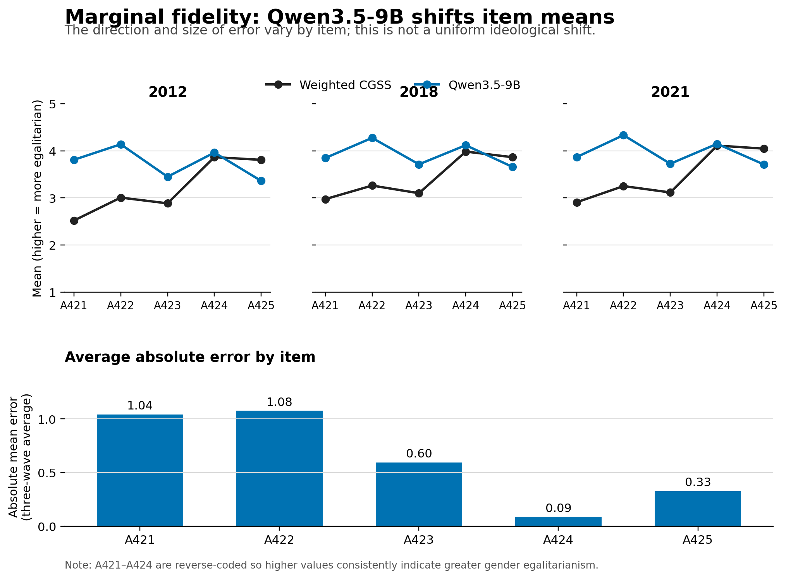
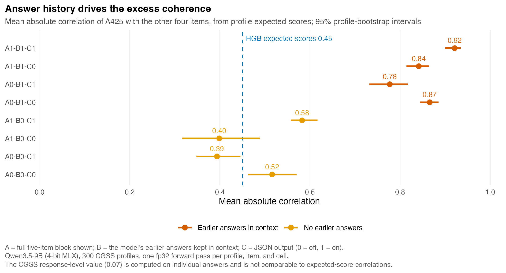

Can an LLM reproduce a survey population from demographics alone?
A preregistered audit of Qwen3.5-9B synthetic respondents against the Chinese General Social Survey (CGSS) 2012, 2018, and 2021
Ge Song, Wuhan University
Summary
A locally run Qwen3.5-9B model was given only the demographic attributes of 300 de-identified CGSS profiles (100 per wave) and asked to answer a five-item gender-attitude battery. The generated population was compared with weighted benchmarks from 31,856 respondents, repeated human samples of the same size, and survey-trained machine-learning models. The model never saw the profiled respondents' answers.
- The first audit (August 2026) sampled answers. Eleven of twelve wave-level core diagnostics fall outside the 95% range of repeated human samples of the same size.
- The follow-up audit (October 2026) reads the model's probabilities for the five options directly and uses a preregistered 2×2×2 experiment. The model's own earlier answers are the main source of the excess coherence between the housework item (A425) and the other four items.
- The first audit's answers turned out to have been generated inside the model's open reasoning block. Under the first-audit prompt, closing that block roughly doubles the housework item's coherence with the other items.
- In ordinal factor models, A425 loads 0.16 on the common factor among CGSS respondents and 0.39–0.55 in the first audit's synthetic answers.
First audit: sampled answers
Five fresh joint calls per profile (1,500 responses), temperature 0.7 and top-p 0.9.
| Diagnostic | Qwen3.5-9B, by wave | Human 95% reference |
|---|---|---|
| Absolute mean error (lower is better) | 0.569–0.707 | upper bound 0.160–0.168 |
| Total variation (lower is better) | 0.214–0.268 | upper bound 0.100–0.104 |
| Variance ratio (1 is best) | 0.668–0.975 | 0.846–1.141 |
| Correlation-matrix RMSE (lower is better) | 0.143–0.192 | upper bound 0.137–0.141 |
| A425 mean absolute correlation | 0.232–0.335 | upper bound 0.198–0.234 |
- The errors are item-specific: the model overstates egalitarianism on A421–A424 and understates support for equal housework (A425).
- Repeated draws add randomness more than stable differences between profiles: 68.2% of predictive variance lies within profiles, and the between-profile variance ratio is 0.265.
- Sparse profiles are not the whole explanation. A histogram gradient boosting model using the same attributes reduces total variation from 0.282 to 0.071.

Follow-up audit: option probabilities and a factorial experiment
For each profile, item, and condition, one forward pass returns the probabilities of the options 1–5 (12,000 forward passes, MLX, 4-bit weights, output projection in float32). Three presentation features that the first audit bundled are crossed: whether the full item block is visible (A), whether the model's earlier answers remain in context (B), and integer versus JSON output (C). The preregistration was committed on 13 October 2026, before any CGSS profile was scored. The primary outcome is the mean absolute correlation between the expected score on A425 and the expected scores on A421–A424, with a profile-cluster bootstrap of 2,000 replicates.
| Effect on A425 mean absolute correlation | Estimate | 95% interval |
|---|---|---|
| B: answer history in context | +0.379 | [0.339, 0.410] |
| A: full item block visible | +0.048 | [0.022, 0.074] |
| C: JSON output | +0.013 | [−0.013, 0.039] |
| A × C | +0.237 | [0.192, 0.286] |
| A × B × C | −0.138 | [−0.239, −0.044] |

- In every condition the matched log score (1.97–3.06) is worse than a uniform guess over five options (ln 5 ≈ 1.61): the model is confidently wrong about individual respondents.
- The condition closest to the CGSS item means has a between-profile variance ratio of 0.09; it gives nearly the same answer to everyone.
Why the two audits differ: the thinking context
A check of the first audit's runner, response files, and server logs showed that its answers were written inside an open <think> block, because LM Studio enabled the model's thinking mode by default. Two exploratory cells, specified in the preregistration before they were run, score the first-audit prompt with that block open or closed.
| First-audit prompt, most probable earlier answers | Open | Closed | A1-B1-C1 |
|---|---|---|---|
| A425 mean absolute correlation | 0.44 | 0.91 | 0.92 |
| Mean absolute gap from first-audit item means | 0.23 | 0.62 | 1.47 |
| Mean absolute error against CGSS item means | 0.68 | 0.36 | 0.95 |
Closing the block raises coherence by 0.47 (95% interval 0.41 to 0.54), to the level of A1-B1-C1 (difference −0.01, interval −0.03 to 0.01). The other prompt differences move item means instead. The factorial was run with the block closed; thinking was not crossed with A, B, and C.
Measurement models
Ordinal one-factor models (WLSMV), items coded so that higher is more egalitarian.
| Population | n | A425 loading | Other loadings | Solution |
|---|---|---|---|---|
| CGSS, weighted | 31,177 | 0.16 | 0.55–0.77 | proper |
| First-audit answers (5 replicates) | 300 each | 0.39–0.55 | 0.66–0.92 | proper |
| Follow-up modal answers, A1-B1-C1 | 300 | 1.02 | 0.88–0.99 | improper |
Every interval for the difference between a first-audit replicate and CGSS lies above zero. The modal-answer populations are nearly deterministic, so their factor solutions are improper.
Exploratory analyses
Added to the preregistration on 29 October 2026, after its results were known and before these analyses were run.
The direction of the bias depends on the configuration
| Error against CGSS (egalitarian coding) | A421 | A422 | A423 | A424 | A425 |
|---|---|---|---|---|---|
| First audit (thinking open) | +1.04 | +1.08 | +0.60 | +0.09 | −0.33 |
| Target item only, JSON (A0-B0-C1) | +0.37 | +1.10 | +0.90 | +0.77 | −1.46 |
| Follow-up reference (A1-B1-C1) | −1.22 | −0.23 | −0.69 | −1.03 | −1.56 |
The first audit's pattern, more egalitarian than CGSS on A421–A424 and less on housework, holds only in some configurations. With the full item block shown, the model is less egalitarian than CGSS on every item.
Subgroup gradients spread to the housework item
| Coefficient | CGSS, public roles | CGSS, housework | Model, housework (8 cells) |
|---|---|---|---|
| Years of education | 0.055 | 0.019 | 0.011–0.098 |
| Urban residence | 0.16 | 0.02 | 0.03–0.88 |
Among people, education and urban residence go with egalitarian answers on public roles but hardly with housework. The model extends both gradients to housework; in seven of eight conditions the urban coefficient for housework is 0.21–0.88.
What this does not show
- The follow-up is not a replication or validation of the first audit; the two differ in thinking context, system and user prompt, decoding, and how answer histories are formed.
- All results describe one 4-bit local model and do not generalize to other models or quantizations.
- A425 is a single positively worded item; its separation from A421–A424 can reflect content, wording, or measurement error.
Data boundary
CGSS microdata are licensed and are not redistributed. The repository contains code, a synthetic demonstration fixture, and aggregate tables only. All model inference ran locally; no profile was sent to an external API.
Citation
Song, Ge. 2026. SurveyLLM-Eval: An Estimand-Aware Audit of LLM Synthetic Respondents. https://github.com/4b8wsfdk7y-cloud/cgss-gender-attitude-llm-audit